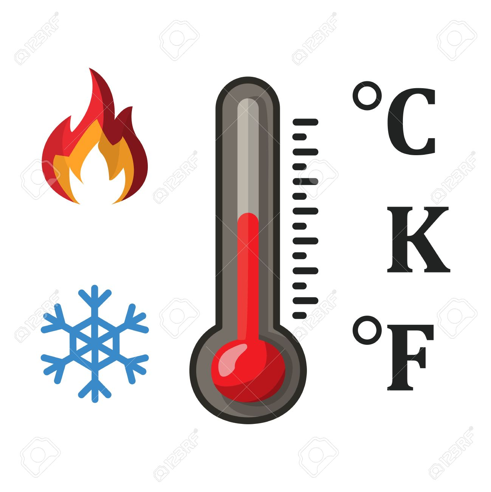

Halo teman temann semuanya, perkenalkan kami dari kelompok Temprature Converter Nah jadi kelompok kami akan membuat aplikasi yang bernama "Temprature Converter", nah jadi yang belum tau aplikasi temperatur converter adalah aplikasi untuk mencari solusi dan cepat untuk mengetahui hasil konversi suhu. Dengan aplikasi ini, kalian semua dapat dengan cepat menghitung konversi suhu berdasarkan kelvin, celcius, dan Fahrenheit. Mohammad Bara Sinae | Web Developer Web developer adalah seseorang yang bertugas untuk membuat dan mengembangkan sebuah situs web, serta memastikan performanya stabil dan baik. - Membuat situs - Membuat rencana pembuatan situs - Membuat produk Muhammmad Adam Putra | Content Writer Content Writer adalah orang yang berspesialisasi dalam menyediakan konten untuk situs web. Setiap situs web memiliki target audiens yang spesifik dan memerlukan konten yang paling relevan untuk menarik bisnis. - Menyesuaikan topik - Membuat, mengelola, dan mendistribusikan konten di artikel - Menyesuaikan grafis dengan caption yang harus diunggah di web Bisuk Nathanael Parhusip | Web Designer Web Designer adalah orang yang bekerja dengan unsur-unsur visual pada suatu halaman web. Web designer adalah orang yang tugasnya membuat tampilan halaman website sehinga tampak begitu cantik dan sedap dipandang mata. - Merancang blayout secara visual - Mengatur tata letak di setaip elemen - Mempercantik tampilan Muhammad Afdhal Nurfikri | App Designer App designer adalah seorang profesional yang bertanggung jawab untuk merancang tampilan dan pengalaman pengguna (user interface dan user experience) dari sebuah aplikasi. - Mendesain elemen visual seperti tombol, ikon, dan menu. - Memilih skema warna, tipografi, dan gaya grafis yang konsisten dengan identitas merek. - Mengoptimalkan alur pengguna untuk membuat aplikasi lebih intuitif dan mudah digunakan.